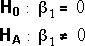
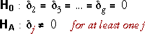
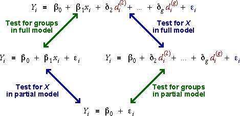

Hypotheses of interest
We again consider the model for g groups with numerical explanatory variable X.
With two groups, there was a single indicator variable, so the test for a difference between group means could be tested with a t-test. When there are 3 or more groups, the hypothesis of no differences between the groups involves more than 1 parameter, so separate t-tests should not be used. The hypotheses of interest are:


Since the second hypotheses involve simultaneous testing of (g - 1) parameters, analysis of variance is needed for testing.
Sequential sums of squares
Analysis of variance splits the total sum of squares (from the model without any explanatory variables) according to one of the sequences below.

The sequential sums of squares are the reductions in the residual sum of squares when moving from the model at the bottom to the most general model at the top by one of the two paths.
There are two possible anova tables, depending on the order of adding the variables.
An example shows how the analysis of variance table is used to test the two hypotheses of interest.
Californian wine quality
The diagram below shows the least squares fit of the model for Quality in terms of Body and Region.
There are two possible anova tables for the two orders of adding Body and Region to the model. Drag the red arrows to reorder the explanatory terms.
Observe that:
The p-value for Region after Body is in the model is reported as 0.0000, so it is almost certain that there is a difference between the regions that is not explained by differences between the Body ratings of the wines.
We therefore conclude that the 3 parallel region lines are separate from each other.
The p-value for Body after Region is in the model is reported as 0.0130, so there is also moderately strong evidence that Quality is related to Body, even after taking account of differences between the regions.
We therefore conclude that there is moderately strong evidence that the 3 parallel region lines do not have zero slope.
Experimental data
As with two groups, the analysis can be simplified for a well-designed experiment in which the explanatory variable X is orthogonal to the grouping. This occurs when the same set of x-values are used for each group.
When X and the grouping are orthogonal, the order of sequentially adding terms in the anova table does not affect the sums of squares, so there is effectively only a single anova table.
Solder joint strength
The chemical element antimony is sometimes added to tin-lead solder to replace the more expensive tin and to reduce the cost of soldering. Tin-lead specimens were prepared using one of four possible cooling methods and with one of four possible amounts of antimony. There were 3 replicates for each combination of cooling method and antimony percentage. (I.e. 3 solder joints were constructed and tested with each combination.) The shear strength (MPa) was measured for each joint.
The design of the experiment ensured that the antimony percentage and cooling method are orthogonal, so there is only a single anova table. Drag the red arrows to reorder the terms and observe that the two sums of squares do not depend on the order.
From the p-values, we conclude that:
There is strong evidence that the cooling method affects the strength of the joint, but no evidence that the percentage antimony has any effect.